Final RMSNorm, prefill W=2048 FP16: 19.80× faster than GPU.
Measured on Panther Lake · 31 August 2026
Where should each LLM operator run?
Qwen2.5-0.5B across Intel Xe3 iGPU and NPU 5, FP16 and W8A16, with context windows from 128 to 2048 tokens. Compilation is excluded.
The backend is a property of the compiled operator and shape—not its name. NPU wins 83 of 224 measured operator-shape decisions; GPU wins 141. The zero-switch oracle below shows the remaining opportunity before handoff cost.
47compiled graph cells
14executable operator groups
21 × 7latency trials × profile trials
32real e2e stage/backend rows
End-to-end reality vs the oracle
Real model inference runs the whole graph on one backend. The green bar apportions each measured e2e stage using its compiled operator profile, then chooses the lower GPU/NPU contribution for every executable group while intentionally charging zero switching cost. Each request is one prefill plus 32 decoded tokens.
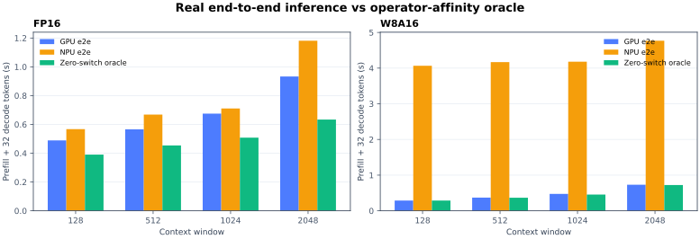
| Window | Precision | GPU e2e | NPU e2e | Oracle | Oracle vs best real |
|---|---|---|---|---|---|
| 128 | FP16 | 489.1 ms | 567.3 ms | 390.3 ms | +20.2% |
| 128 | W8A16 | 287.8 ms | 4.07 s | 287.8 ms | +0.0% |
| 512 | FP16 | 566.2 ms | 668.3 ms | 453.9 ms | +19.8% |
| 512 | W8A16 | 369.4 ms | 4.17 s | 366.5 ms | +0.8% |
| 1024 | FP16 | 675.1 ms | 710.8 ms | 508.1 ms | +24.7% |
| 1024 | W8A16 | 473.5 ms | 4.18 s | 455.4 ms | +3.8% |
| 2048 | FP16 | 932.8 ms | 1.18 s | 633.9 ms | +32.0% |
| 2048 | W8A16 | 730.5 ms | 4.77 s | 723.4 ms | +1.0% |
Pre-attention RMSNorm, decode W=2048 INT8: 279.52× faster than NPU.
Every operator, every window
Each graph contains one executable operator group. Every window has exactly four bars: GPU/NPU × FP16/W8A16. NPU bars use its faster plain or NPUW compile path for that operator. Error whiskers use the profiled p10–p90 range; fused logical nodes are charged to their executable group.
GPU FP16NPU FP16GPU INT8NPU INT8
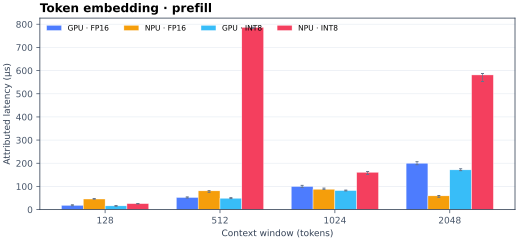
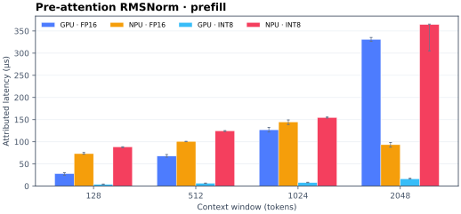
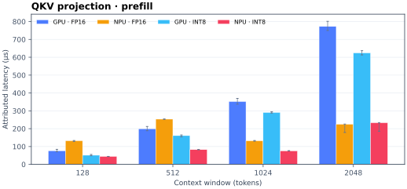
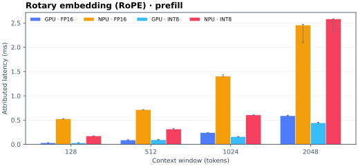
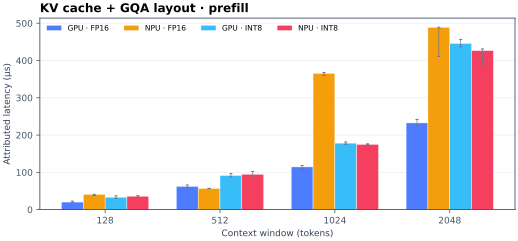
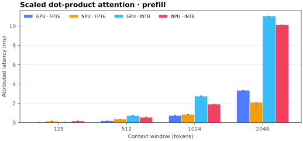
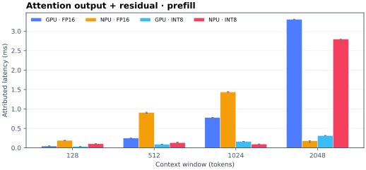
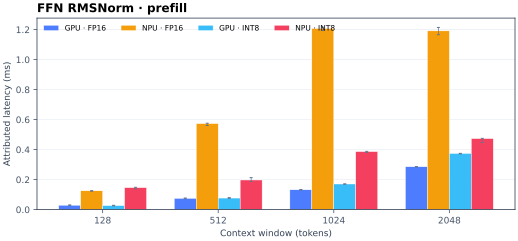
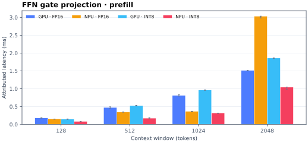
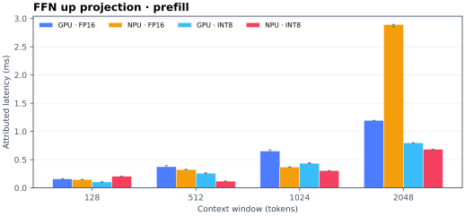
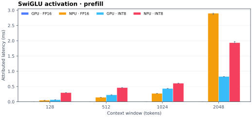
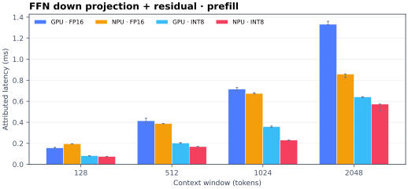
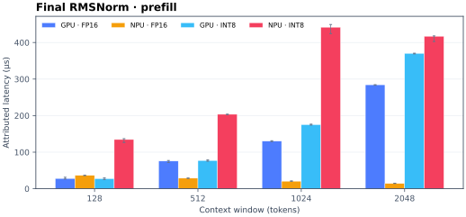
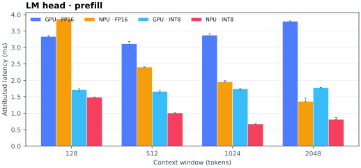
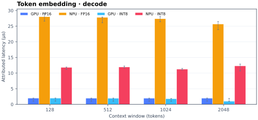
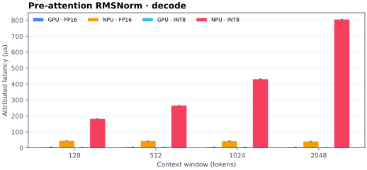
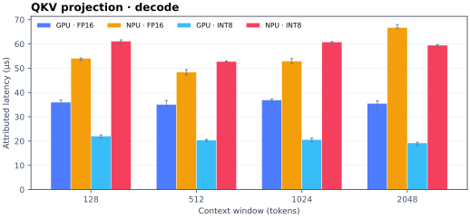
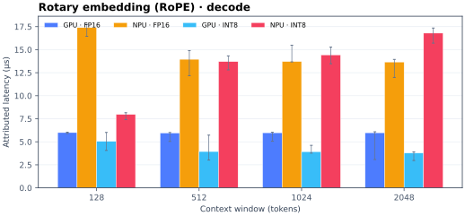
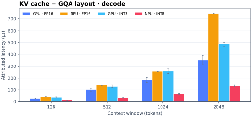
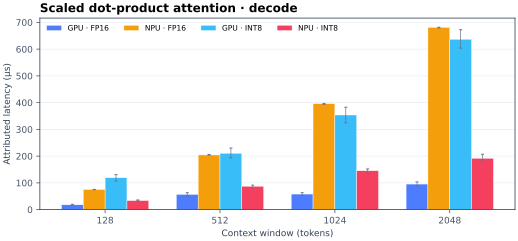
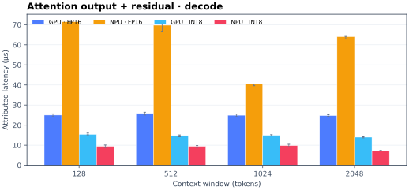
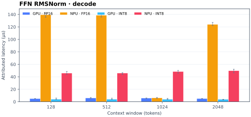
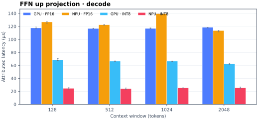
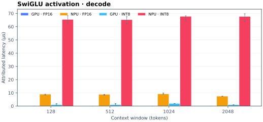
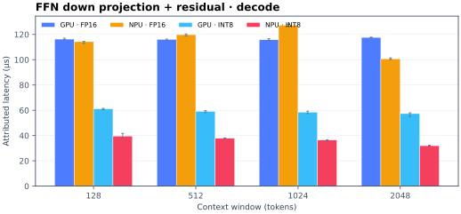
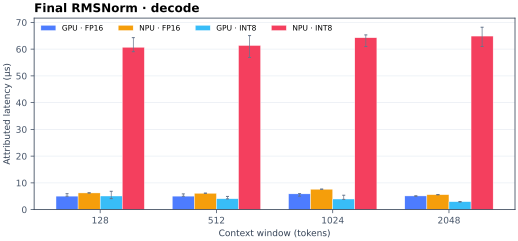
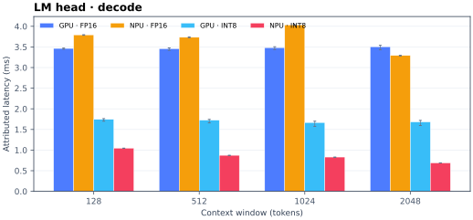
Affinity summary
The majority backend across four windows and two precisions. A split result is deliberately resolved to GPU, the conservative default that avoids handoff.
| Executable group | Prefill majority | Decode majority |
|---|---|---|
| Token embedding | GPU 2/8 NPU wins | GPU 0/8 NPU wins |
| Pre-attention RMSNorm | GPU 1/8 NPU wins | GPU 0/8 NPU wins |
| QKV projection | NPU 6/8 NPU wins | GPU 0/8 NPU wins |
| Rotary embedding (RoPE) | GPU 0/8 NPU wins | GPU 0/8 NPU wins |
| KV cache + GQA layout | GPU 3/8 NPU wins | GPU 4/8 NPU wins |
| Scaled dot-product attention | GPU 4/8 NPU wins | GPU 4/8 NPU wins |
| Attention output + residual | GPU 2/8 NPU wins | GPU 4/8 NPU wins |
| FFN RMSNorm | GPU 0/8 NPU wins | GPU 0/8 NPU wins |
| FFN gate projection | NPU 7/8 NPU wins | NPU 7/8 NPU wins |
| FFN up projection | NPU 6/8 NPU wins | NPU 5/8 NPU wins |
| SwiGLU activation | GPU 0/8 NPU wins | GPU 0/8 NPU wins |
| FFN down projection + residual | NPU 7/8 NPU wins | NPU 6/8 NPU wins |
| Final RMSNorm | GPU 3/8 NPU wins | GPU 0/8 NPU wins |
| LM head | NPU 7/8 NPU wins | NPU 5/8 NPU wins |